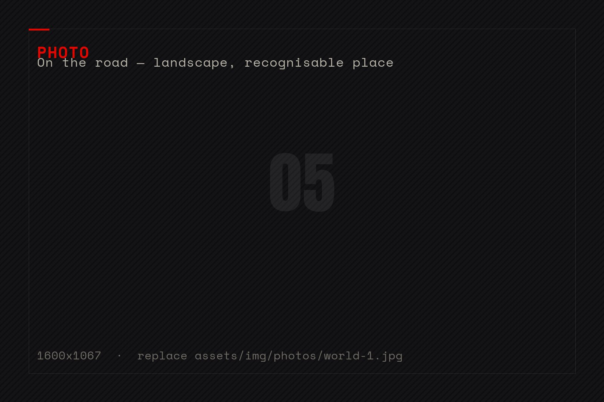
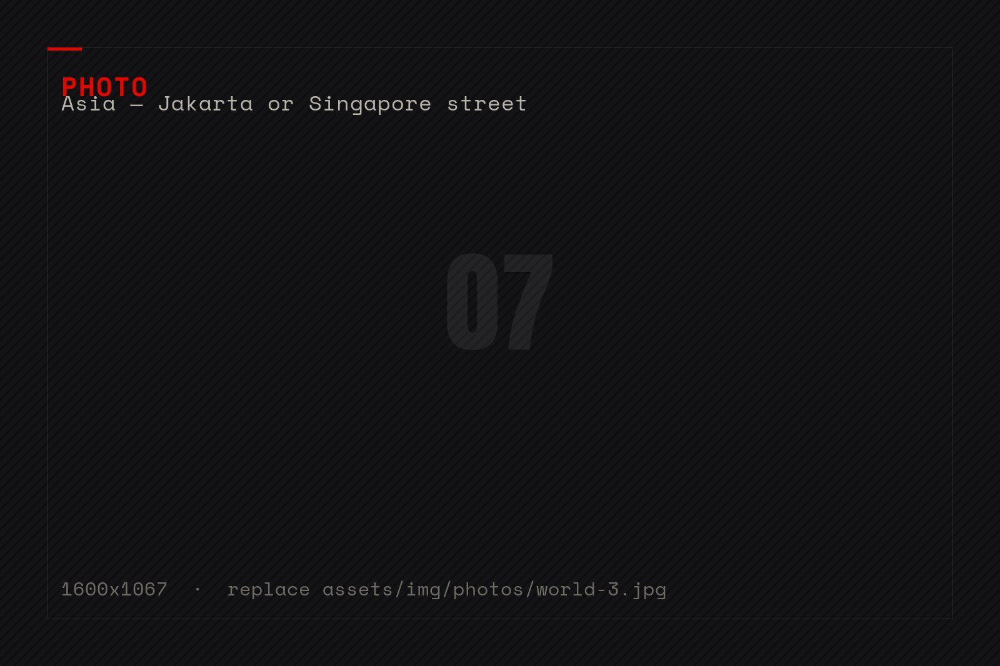

Home / 02 · World
80 countries.
10 homes.Zero regrets.
“My friends say I should be twice my age, considering everything I've already lived through.” Four continents, ten addresses, one rule: the language is learned on the road, preferably through a song.
The map
so far
/01 — TEN HOMES, AND THE STAGES BETWEEN
Ten places
called home
/02 — A LIFE IN ADDRESSES
Germany
Mainz — bilingual start
Slovenia
Near Maribor — home base
Italy
Milan — runways & Italian
Portugal
Guimarães — Erasmus year
Brazil
The south — the voice awakens
United Kingdom
London — the European leg
Singapore
Esplanade — the peak stage
Indonesia
Jakarta — sang for a living
Norway
Tour guide — 13 languages a day
USA
Chicago & beyond
+ Hong Kong chapter · 80 countries explored in total — and counting.


Oslo, Norway — the shift
One working day, thirteen languages
Working as a tour guide in Norway, Ramona once guided a single day through 13 languages — and counting the languages she used as a receptionist that same day, the total reached 18.
“It was quite hard to switch from one language to another,” she admits. “But if you're mentally rested, it's no problem.” Norwegian was her hardest language to practise — not because of the grammar, but because Norwegians speak such good English that she had to fight to be allowed to answer in theirs.
Rules of
the road
/03 — FIELD NOTES
Born in Mainz to Slovenian parents who spent every holiday and every saved mark driving “home” to build a house near Maribor, she learned early that the world is bigger than one address. At ten, the family moved back for good — a shock for the fourth-grader from an international school, and probably the moment she decided a girl's room in the basement would not be the only world she'd know.
Her travel kit is unusual: before entering a new country, she writes down the rude words first — “so you know what not to say” — and learns the rest through telenovelas and songs. Spanish, French, Italian and Portuguese all arrived through the TV screen before they arrived through textbooks.
Still on the bucket list
Where will the road take me next? Far.— Ramona Irgolič · Dnevnik, 2025